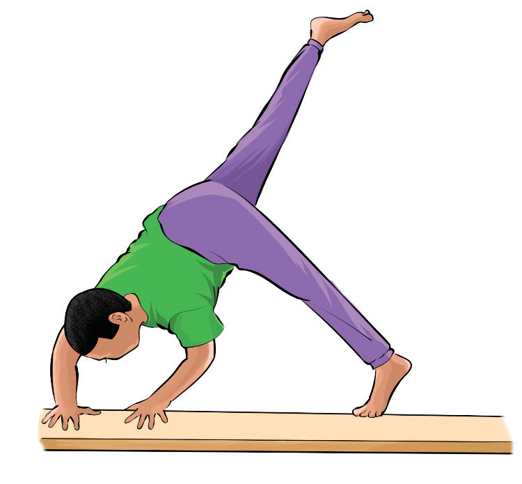

Activity 4.22
Search from the internet and other sources on how to execute a cartwheel dismount and practice it repeatedly until you master the skill.
Scissor dismount
A scissor dismount is a way of finishing a pommel horse routine by using a scissor movement to exit the apparatus with control and style. The following steps will help you practice scissor dismounting from a pommel horse:
(i)
Start swinging your legs in a controlled scissor motion;
(ii)
Swing your body and legs into a controlled dismount with one final powerful leg swing, Figure 4.24; and
(iii)
Focus on landing cleanly and maintaining balance.